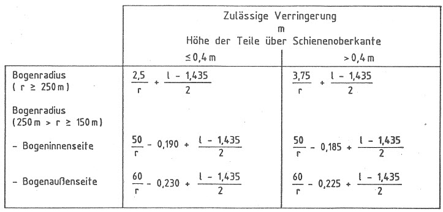

Nichtamtliches InhaltsverzeichnisEisenbahn-Bau- und Betriebsordnung (EBO)
Eisenbahn-Bau- und Betriebsordnung (EBO)
Anlage 9 (zu § 22)
Einschränkung der Fahrzeugmaße
(Fundstelle: BGBl. I 1991, Nr. 30 Anlageband S. 26)
- 1.
- Für die Berechnung der Fahrzeugabmessungen sind die Maße der Bezugslinien (Anlage 7 und 8) einzuschränken um die Einflüsse aus:
- 1.1
- den horizontalen Verschiebungen, die sich aus den Querspielen zwischen Fahrzeugaufbau und den Radsätzen sowie aus der Stellung der Radsätze im Gleisbogen und in der Geraden ergeben,
- 1.2
- der Veränderung der Fahrzeughöhe infolge Abnutzung,
- 1.3
- den senkrechten Ausschlägen,
- 1.4
- der senkrechten Verschiebungen, die sich aus der Stellung des Fahrzeugs in Kuppen- und Wannenausrundungen ergibt,
- 1.5
- der quasistatischen Seitenneigung, die sich bei Stand in einem Gleis mit 50 mm Überhöhung oder bei Fahrt in einem Gleisbogen mit 50 mm Überhöhungsfehlbetrag ergibt und
- 1.6
- der über 1 Grad hinausgehender Unsymmetrie, die sich aus den Bau- und Einstellungstoleranzen des Fahrzeugs und der vorgesehenen Belastung ergibt.
- 2.
- Die vorgenannten Einschränkungen dürfen wie folgt verringert werden:

l = Spurweite des Gleises; die Spurweite ist mit 1,465 m anzusetzen;
für Wagen mit Drehgestellen im Gleisborgen l = 1,435 m
für Wagen mit Drehgestellen im Gleisborgen l = 1,435 m